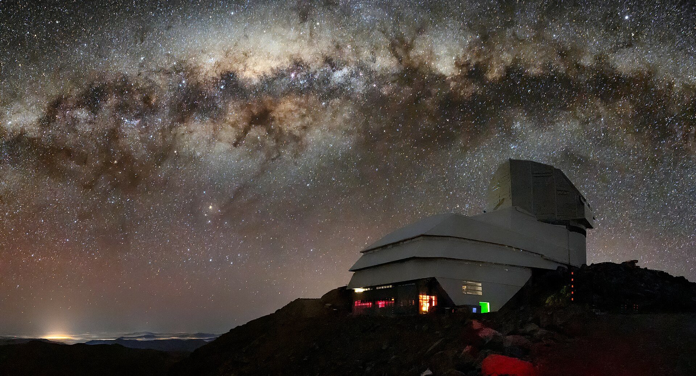

From today's featured article
A white dwarf is a stellar core remnant composed mostly of electron-degenerate matter, supported
against its own gravity only by electron degeneracy pressure. A white dwarf is very dense: in an
Earth sized volume, it contains a mass comparable to the Sun. What light it radiates is from its
residual heat. White dwarfs are thought to be the final evolutionary state of stars whose mass is
insufficient for them to become a neutron star or black hole. This includes more than 97% of the
stars in the Milky Way. After the hydrogen-fusing period of such a main-sequence star ends, it will
expand to a red giant and shed its outer layers, leaving behind a core which is the white dwarf.
This, very hot when it forms, cools as it radiates its energy until its material begins to
crystallize into a cold black dwarf. The oldest known white dwarfs still radiate at temperatures of
a few thousand kelvins, which establishes an observational limit on the maximum possible age of the
universe. (Full article...)
|
|
In the news

The Vera C. Rubin Observatory (pictured) releases the first light images from its new 8.4-metre
(28 ft) telescope.
In basketball, the Oklahoma City Thunder defeat the Indiana Pacers to win the NBA Finals.
The United States conducts military strikes on three nuclear facilities in Iran.
In rugby union, the Crusaders defeat the Chiefs to win the Super Rugby Pacific final.
In ice hockey, the Florida Panthers defeat the Edmonton Oilers to win the Stanley Cup.
|
Did you know ...
- ... that Joanna Schaffhausen (pictured) earned a doctorate in behavioral neuroscience before writing serial-killer novels?
- ... that the book Animals in War inspired the campaign that led to the Animals in War Memorial?
- ... that Chinese actress Huang Wei portrayed a single historical figure in numerous Chinese films and dramas for more than 20 years?
- ... that bills to postpone the 2025 Philippine barangay elections were filed even after the Supreme Court declared unconstitutional the postponement of the 2023 elections?
- ... that Janet Evans was banned from Coldbath Fields Prison, where her husband was imprisoned, for inciting a riot at the gates?
- ... that even before its first broadcast, a Florida TV station was the subject of a U.S. Supreme Court case and a protest by a competitor over its antenna?
- >... that Perceval, the Story of the Grail by Chrétien de Troyes is considered by literary historians to be the earliest example of the narrative technique of entrelacement?
- ... that German athlete Leander Wiegand received a scholarship to play American football at an American college that had never seen him play?
... that a judge on DVD Verdict found Death Race 2 guilty of "running on empty"?
|
|
On this day
June 24: Jaanipäev in Estonia

- 1374 – An outbreak of dancing mania, in which crowds of people danced themselves to exhaustion, began in Aachen (in present-day Germany) before spreading to other parts of Europe.
- 1717 – The first Grand Lodge of Freemasonry, the Premier Grand Lodge of England, was founded in London.
- 1724 – On the Feast of St. John the Baptist, Bach led the first performance of Christ unser Herr zum Jordan kam, BWV 7, the third cantata of his chorale cantata cycle.
- 1943 – Amid racial tensions, U.S. Army military police shot and killed a black serviceman after a confrontation at a pub in Bamber Bridge, England.
- 2010 – Julia Gillard (pictured) was sworn in as the first female prime minister of Australia after incumbent Kevin Rudd declined to contest a leadership spill in the Labor Party.
|